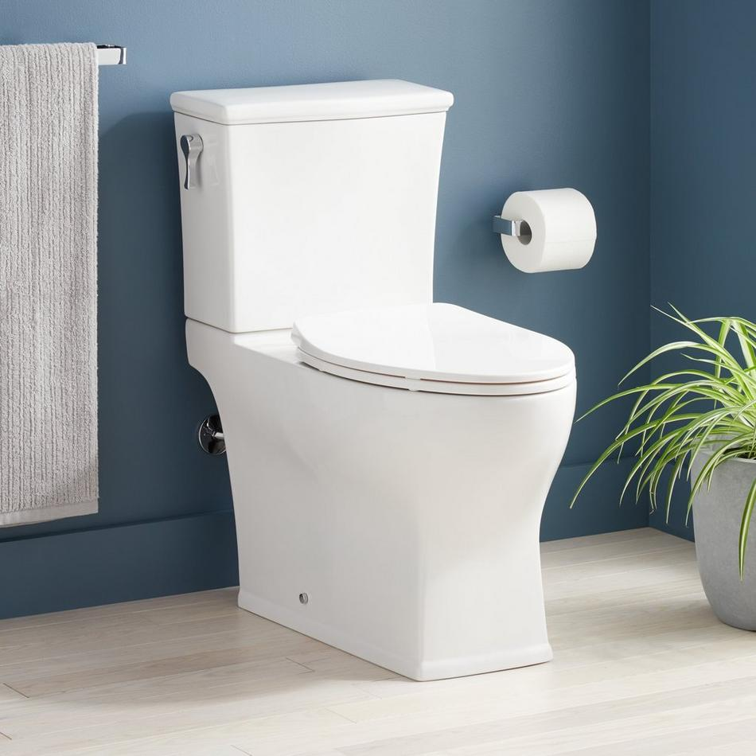
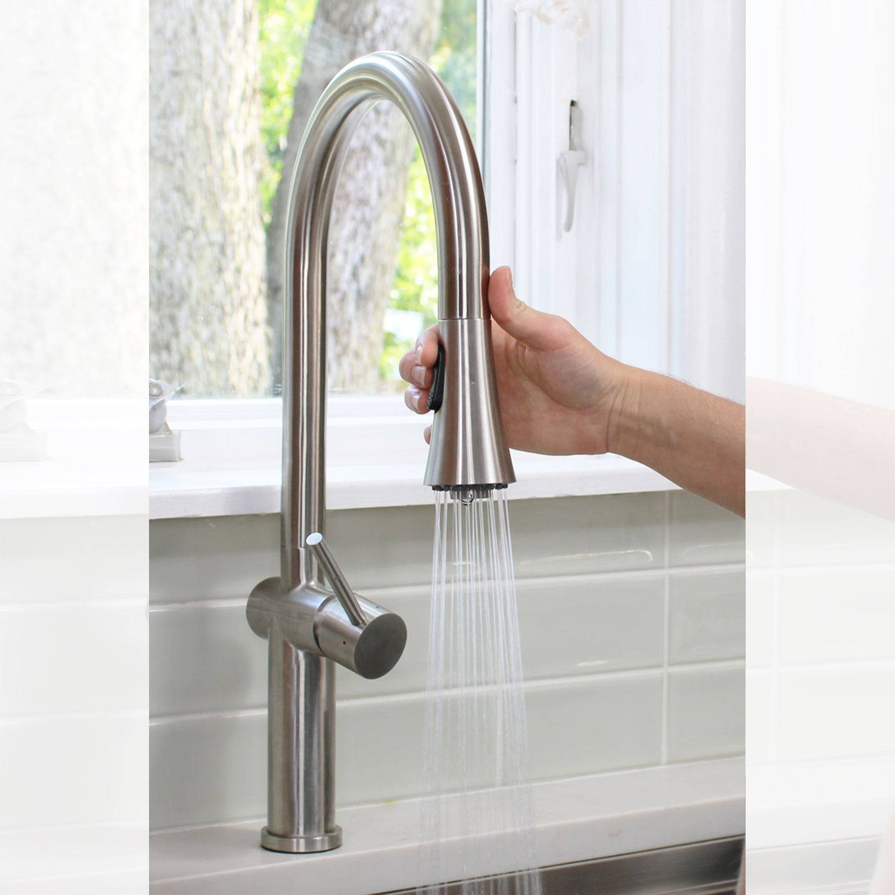
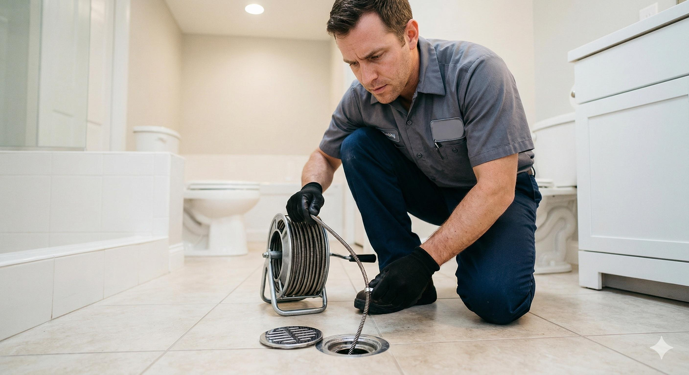
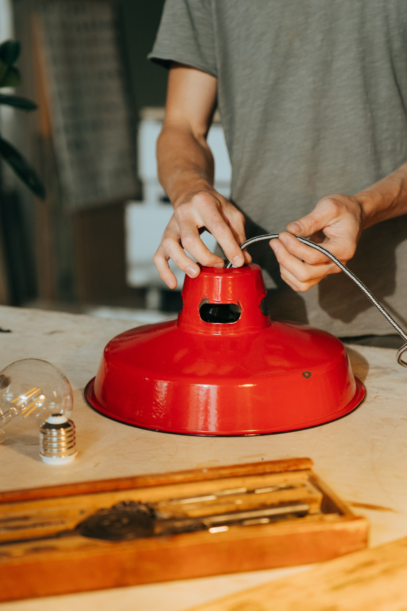
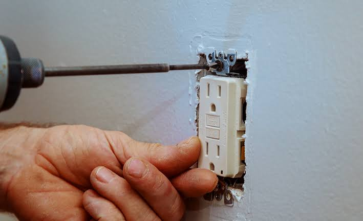
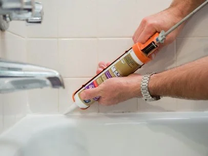
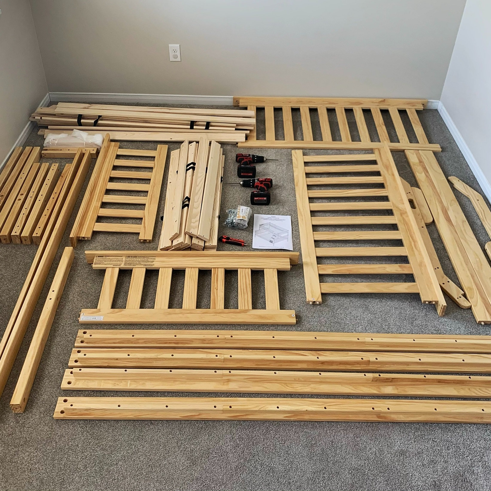
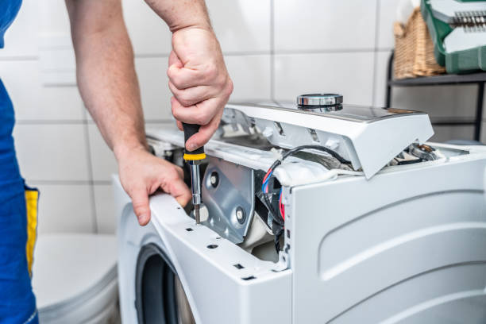
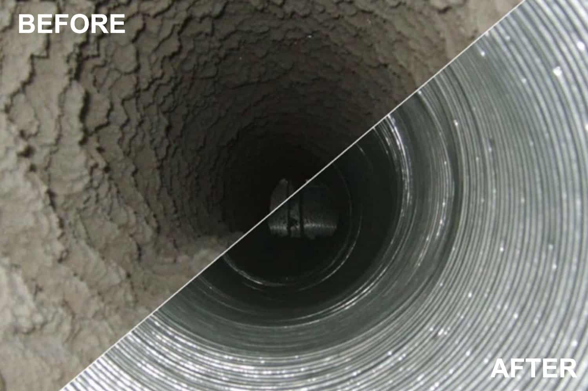

Toilet Repair & Replacement
Help with common toilet repairs, replacements and installation needs in residential bathrooms.
Request toilet service →
Reliable repairs, installations, maintenance and home-improvement services for the projects on your to-do list.
J & P Handyman Services is a licensed, bonded and insured handyman serving customers throughout Central Jersey. We help homeowners with a wide range of repairs, installations, maintenance and improvement projects.
Whether you have a small repair that needs attention, something that needs to be installed or a larger home-improvement project, we're here to help.
If you don't see your particular project listed below, contact us. Handyman projects can vary, and we'll be happy to discuss what you need.

Help with common toilet repairs, replacements and installation needs in residential bathrooms.
Request toilet service →
Repair or replace leaking, damaged or outdated household faucets.
Request faucet service →

Replace or upgrade household light fixtures where permitted and appropriate.
Request light fixture service →
Replace worn, damaged or outdated switches and electrical outlets where permitted.
Request outlet or switch service →
Patch holes, repair damaged Sheetrock and prepare walls for painting.
Request Sheetrock service →
Fresh coats, touch-ups and room transformations for residential interiors.
Request painting service →
Remove worn caulk and apply a clean new seal around tubs and showers.
Request caulking service →
Install blinds, curtain rods and other residential window treatments.
Request window treatment service →
Professional assembly for ready-to-assemble furniture and household items.
Request furniture assembly →
Help with common household appliance repair and maintenance needs.
Request appliance service →
Clean, secure wall mounting and installation for televisions.
Request TV installation →
Remove lint buildup and help improve dryer airflow and efficiency.
Request dryer vent service →
Clean suitable exterior surfaces, patios, walkways and other outdoor areas.
Request power washing →J & P Handyman Services provides a variety of residential handyman services, including repairs, replacements, installations, painting, furniture assembly, TV installation, dryer vent cleaning, power washing and other home-improvement projects.
Yes. Small home repairs and improvement projects are an important part of handyman services. Contact us and let us know what needs to be done.
Yes. J & P offers professional assembly for ready-to-assemble furniture and household items.
Yes. We provide television wall-mounting and installation services.
Yes. J & P Handyman Services is licensed, bonded and insured.
Have a project that isn't listed above? Contact J & P Handyman Services and tell us what you need.
Tell us what you need and we'll help you figure out the next step.
REQUEST A QUOTE